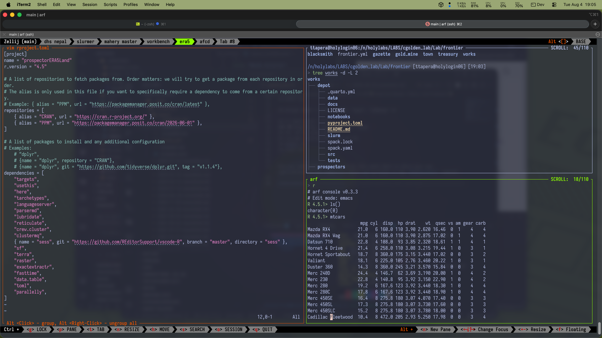

1 Why HPC is the lab default
Harvard University’s computing cluster is called FASRC (Faculty of Arts and Sciences Research Computing), and is one of the largest, most powerful compute clusters on the East Coast. It provides scalable computing resources, secure environments for sensitive data, and a shared infrastructure that supports collaboration and reproducibility. As discussed in Principle 1, we treat HPC as the default environment for data science in the lab. If your project works on HPC, it is more likely to be reproducible, shareable, and scalable. If it only works on your local machine, which only has settings and configurations specific to you, it is more likely to break when you or someone else tries to run it again in the future. By working this way, we intentionally introduce a small amount of friction upfront, to save a lot of time and headache in the future.
But don’t let that intimidate you! The FASRC team has done a great job of making the cluster accessible and user-friendly, and there are many ways to interact with it that require close to zero setup or expertise. The goal of this guide is to help you find the right access path for your needs, and to give you some practical tips and examples for working on HPC.
2 Some Lingo
Let’s clear the air of some jargon that you might encounter when working with HPC:
| Term | Definition |
|---|---|
| HPC | High Performance Computing. A general term for powerful computing resources that can handle large-scale data analysis and modeling. |
| FASRC | Faculty of Arts and Sciences Research Computing. The computing cluster used at Harvard. |
| Cannon | The standard FASRC cluster for general research computing. Synonymous with FASRC for all intents and purposes. |
| FASSE | The high security environment on FASRC dedicated for work that requires stronger data protection (L3 and above). |
| Open OnDemand (OOD) | A web-based interface that provides access to interactive apps, file browsing, and job submission tools on FASRC. |
| Shell/SSH (noun) | A command-line interface used to interact with the operating system and run commands, including managing files and submitting jobs. Common shells include bash (default for FASRC) and zsh (default for macOS). |
| SSH (verb) | To connect to a remote machine using the SSH protocol (e.g., “SSH into the cluster”). |
| SLURM | A workload manager that allows you to schedule and manage batch jobs on the cluster. |
| Batch Job | A task given to the system in the form of a script. You submit it to the queue and it runs when resources are available. For example, a Python script that you want to run on the cluster without manual intervention can be submitted to SLURM as a job. |
| login node | The part of the cluster where you can run commands, manage files, and submit jobs. It is not meant for heavy computation. |
| compute node | The part of the cluster where more intense computation happens. Usually, you use this to do long-running interactive tasks like RStudio or Jupyter notebooks, and submit batch jobs. |
Another confusing collection of jargon is the interchangeable use of environments, software, and modules. Let’s clarify these for this discussion:
Software: The actual programs and tools that you use to do your work, such as R, Python, or specific packages. For example, R version 4.2.0 is a piece of software.
Modules: A system for managing software on HPC clusters. Modules allow you to load and unload specific versions of software and their dependencies. For example, you might run
module load R/4.2.0to load R version 4.2.0 and its associated libraries into your environment.Computing Environment: The overall setup of your computing context, including the hardware, operating system, software packages, and modules that are available to you. For example, the Cannon cluster is an environment, and the FASSE cluster is a different environment with different security settings and software availability.
Virtual Environment: A self-contained directory that contains a specific version of (usually) Python and its associated packages. Virtual environments allow you to create miniature, isolated environments for different projects, so that you can manage dependencies and avoid conflicts between packages.
Environment variables: These are key-value pairs that are set in your shell and can be accessed by your programs. They often contain configuration settings, such as paths to software or proxy settings. Importantly, environment variables are “set” by the shell when it starts, are specific to the user who starts the shell, and are inherited by any processes that are started from that shell. They are not global settings for the cluster, but rather specific to you your session. For example, when I log into the cluster, my shell automatically sets environment variables that point to the R and Python installations, and I can also set my own environment variables for things like proxy settings or custom paths. These settings are made in the file
~/.bashrc, which you can modify to create a customized environment. Take a moment to look at your own environment variables by runningenvin your shell, to see what is set by default, andcat ~/.bashrcto see your customizations. Furthermore, by using a virtual environment, you can create project-specific environment variables which can be different from the global environment variables set by the shell, for example if you need a specific version of Python for a particular project.
For your purposes, “Software” refers broadly to the programs and tools you use, “Modules” are the FASRC-managed software packages you load, “Computing Environment” is the overall context of your work on HPC, and “project environment,” is the specific configuration of software and settings that your local project relies on to run successfully.
3 Interface
We recommend two main interfaces for working on FASRC: Open OnDemand (OOD) and VSCode1. OOD is a web-based interface that provides access to interactive apps like RStudio Server, Jupyter, and Matlab, as well as file browsing and job submission tools. VSCode is a powerful code editor that can connect to the cluster via SSH, allowing you to edit files, run commands, and manage your code directly from your local machine. Both interfaces have their strengths and weaknesses, and the best choice depends on your specific needs and preferences.
4 Choose the right access path

Have you ever wanted to have all of the convenience of VSCode on your local machine, but have it actually execute your code on the cluster? This is possible with the Remote - SSH extension for VSCode. It allows you to connect your local VSCode to a remote server (in this case, the FASRC cluster) via SSH, and run your code in that environment. This means that you can edit files, run commands, and manage your code directly from your local machine, while still taking advantage of the powerful computing resources of the cluster.
Check out the Remote-SSH guide to learn how to set it up and use it effectively!
🚦🚧 This section is under construction 🚧🚦
If you prefer to work entirely from the command line, you can connect to the FASRC cluster via SSH and use the command-line interface to navigate, edit files, and submit jobs. Doing so requires familiarity with the command-line, and for beginners is going to feel like a lot of friction. However, as you improve your dexterity and memory, you’ll find a turning point where the command line is actually faster than any GUI or IDE, and you can do things that are actually impossible in VSCode. For example, you can use grep to search through thousands of files in seconds, or use awk to manipulate data on the fly.
The command-line interface is also more flexible and customizable, allowing you to create scripts and automate tasks, customize the look, feel, and navigation of your shell, and build or install awesome tools and helpers to make your every day work just that much more efficient.

Investing in command-line mastery is a long-term investment that pays off in the end, and is a skill that will serve you well in any computing environment, not just HPC. However, for most users, we recommend using the command-line in conjunction with OOD or VSCode, rather than as the sole interface.
🚦🚧 This section is under construction 🚧🚦 Open our Command Line guide to start building your command-line skills, and learn how to use the command-line interface effectively on FASRC.
Footnotes
There is technically a third interface, which is barebones command-line access via SSH. This is the most basic way to interact with the cluster. However, we recommend using OOD or VSCode for most interactive work, as they provide a more user-friendly experience and better support for code editing and project management. Doing so purely via SSH is possible, but requires strong familiarity with the command-line, and doesn’t really provide any advantages over the other two options unless you’re really proficient, and that comes with time and experience.↩︎